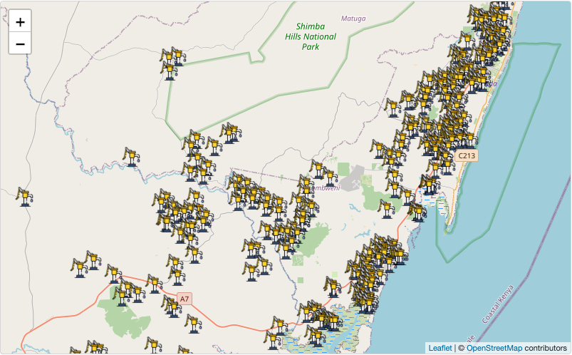

The goal of waterpumpkwale is to provide datasets for monitoring weekly volume of hand pumps in Kwale, Kenya. This package contains valuable information of geo-locations of hand pumps in Kwale as well as monitoring data recorded in year 2014 and 2015. The data is collected part of the project UPGro (Unlocking the Potential of Groundwater for the Poor) which aimed to improve the evidence and understanding of groundwater across Sub-Saharan Africa to help tackle poverty.
Installation
You can install the development version of waterpumpkwale from GitHub with:
# install.packages("devtools")
devtools::install_github("openwashdata/waterpumpkwale")Alternatively, you can download the individual datasets as CSV or XLSX file from the table below.
| dataset | CSV | XLSX |
|---|---|---|
| location | Download CSV | Download XLSX |
| weeklyvol2014 | Download CSV | Download XLSX |
| weeklyvol2015 | Download CSV | Download XLSX |
Introduction
This dataset contains a summary of the weekly volumetric output of pumps monitored using Smart Handpump sensors for 2014 and 2015 in Kwale, Kenya.12
Notes:
- The accuracy of these volume figures should be considered to be +/- 20%.
- The dataset has gaps due to variable signal, and some attrition due to damage and vandalism.
- Not all pumps in the study area were under monitoring.
Data
The package provides access to three datasets location, weeklyvol2014, and weeklyvol2015.
location data
The location data set has 6 variables and 299 observations. They record 299 hand pumps location information. For an overview of the variable names, see the following table.
| variable_name | variable_type | description |
|---|---|---|
| pumpid | character | ID number of the water pump |
| description | character | Name of the pump location |
| x_arc1960 | double | Easting in metres, Arc 1960 / UTM zone 37S |
| y_arc1960 | double | Northing in metres, Arc 1960 / UTM zone 37S |
| lat_wgs84 | double | Latitude in WGS 84 coordinate system |
| long_wgs84 | double | Longitude in WGS 84 coordinate system |
weeklyvol2014 and weeklyvol2015 data
The weeklyvol2014 data set has 53 variables and 324 observations. The weeklyvol2015 data set has 53 variables and 297 observations.
These two datasets follow the same structure and we here use weeklyvol2014 as an illustration. For an overview of the variable names, see the following table.
| variable_name | variable_type | description |
|---|---|---|
| pumpid | character | ID number of the water pump |
| 1 | double | Volume of water pumped in week 1 of 2014 |
| 2 | double | Volume of water pumped in week 2 of 2014 |
| 3 | double | Volume of water pumped in week 3 of 2014 |
| 4 | double | Volume of water pumped in week 4 of 2014 |
| 5 | double | Volume of water pumped in week 5 of 2014 |
| 6 | double | Volume of water pumped in week 6 of 2014 |
| 7 | double | Volume of water pumped in week 7 of 2014 |
| 8 | double | Volume of water pumped in week 8 of 2014 |
| 9 | double | Volume of water pumped in week 9 of 2014 |
| 10 | double | Volume of water pumped in week 10 of 2014 |
| 11 | double | Volume of water pumped in week 11 of 2014 |
| 12 | double | Volume of water pumped in week 12 of 2014 |
| 13 | double | Volume of water pumped in week 13 of 2014 |
| 14 | double | Volume of water pumped in week 14 of 2014 |
| 15 | double | Volume of water pumped in week 15 of 2014 |
| 16 | double | Volume of water pumped in week 16 of 2014 |
| 17 | double | Volume of water pumped in week 17 of 2014 |
| 18 | double | Volume of water pumped in week 18 of 2014 |
| 19 | double | Volume of water pumped in week 19 of 2014 |
| 20 | double | Volume of water pumped in week 20 of 2014 |
| 21 | double | Volume of water pumped in week 21 of 2014 |
| 22 | double | Volume of water pumped in week 22 of 2014 |
| 23 | double | Volume of water pumped in week 23 of 2014 |
| 24 | double | Volume of water pumped in week 24 of 2014 |
| 25 | double | Volume of water pumped in week 25 of 2014 |
| 26 | double | Volume of water pumped in week 26 of 2014 |
| 27 | double | Volume of water pumped in week 27 of 2014 |
| 28 | double | Volume of water pumped in week 28 of 2014 |
| 29 | double | Volume of water pumped in week 29 of 2014 |
| 30 | double | Volume of water pumped in week 30 of 2014 |
| 31 | double | Volume of water pumped in week 31 of 2014 |
| 32 | double | Volume of water pumped in week 32 of 2014 |
| 33 | double | Volume of water pumped in week 33 of 2014 |
| 34 | double | Volume of water pumped in week 34 of 2014 |
| 35 | double | Volume of water pumped in week 35 of 2014 |
| 36 | double | Volume of water pumped in week 36 of 2014 |
| 37 | double | Volume of water pumped in week 37 of 2014 |
| 38 | double | Volume of water pumped in week 38 of 2014 |
| 39 | double | Volume of water pumped in week 39 of 2014 |
| 40 | double | Volume of water pumped in week 40 of 2014 |
| 41 | double | Volume of water pumped in week 41 of 2014 |
| 42 | double | Volume of water pumped in week 42 of 2014 |
| 43 | double | Volume of water pumped in week 43 of 2014 |
| 44 | double | Volume of water pumped in week 44 of 2014 |
| 45 | double | Volume of water pumped in week 45 of 2014 |
| 46 | double | Volume of water pumped in week 46 of 2014 |
| 47 | double | Volume of water pumped in week 47 of 2014 |
| 48 | double | Volume of water pumped in week 48 of 2014 |
| 49 | double | Volume of water pumped in week 49 of 2014 |
| 50 | double | Volume of water pumped in week 50 of 2014 |
| 51 | double | Volume of water pumped in week 51 of 2014 |
| 52 | double | Volume of water pumped in week 52 of 2014 |
Example
We can have a look where the hand pumps locate in Kwale using the dataset location. For more data exploration, you may check out a detailed example here.
library(leaflet)
# customize marker icon
handpumpicon <- makeIcon(
iconUrl = "https://cdn-icons-png.flaticon.com/512/5984/5984318.png",
iconWidth = 30, iconHeight = 30
)
# Display an interactive map
leaflet(options = leafletOptions(crs = leafletCRS(proj4def = "WGS84"))) |>
addProviderTiles("OpenStreetMap") |>
addMarkers(
data = location,
lng = ~`long_wgs84`,
lat = ~`lat_wgs84`,
popup = ~pumpid,
label = ~`description`,
icon = handpumpicon
)
License
Data are available as CC-BY.
Citation
If you use the data or the package, consider to cite this package with the following information to give credits for authors of the dataset!
citation("waterpumpkwale")
#> To cite package 'waterpumpkwale' in publications use:
#>
#> Thomson P, Hope R, Foster T, Zhong M, Schöbitz L (2023).
#> "waterpumpkwale: Weekly Handpump Water Volumes, Kwale County, Kenya
#> 2014-2015." doi:10.5281/zenodo.8399886
#> <https://doi.org/10.5281/zenodo.8399886>.
#> <https://github.com/openwashdata/waterpumpkwale>.
#>
#> A BibTeX entry for LaTeX users is
#>
#> @Misc{thomson_etall:2023,
#> title = {waterpumpkwale: Weekly Handpump Water Volumes, Kwale County, Kenya 2014-2015},
#> author = {Patrick Thomson and Rob Hope and Tim Foster and Mian Zhong and Lars Schöbitz},
#> year = {2023},
#> doi = {10.5281/zenodo.8399886},
#> url = {https://github.com/openwashdata/waterpumpkwale},
#> abstract = {This dataset contains a summary of the weekly volumetric output of handpumps monitored using Smart Handpump sensors in 2014 and 2015 in Kwale County, Kenya, together with the locations of the monitored pumps.},
#> keywords = {open data,washdata,handpumps,water supply,groundwater,smart handpump,kwale,kenya,africa,open-data,open-datasets,r,underground-water,upgro,water-pump},
#> version = {0.0.1},
#> }Related References
[1] P. Thomson, R. Hope, and T. Foster, “GSM-enabled remote monitoring of rural handpumps: a proof-of-concept study,” Journal of Hydroinformatics, vol. 14, no. 4, pp. 829–839, 05 2012. [Online]. Available: https://doi.org/10.2166/hydro.2012.183
[2] Behar, J., Guazzi, A., Jorge, J., Laranjeira, S., Maraci, M.A., Papastylianou, T., Thomson, P., Clifford, G.D. and Hope, R.A., 2013. Software architecture to monitor handpump performance in rural Kenya. In Proceedings of the 12th International Conference on Social Implications of Computers in Developing Countries, Ochos Rios, Jamaica. pp. 978 (Vol. 991).